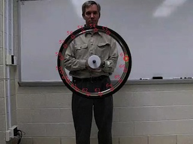

bicycle-wheel.mp4
A bicycle wheel is held by its axle and rotates with nearly constant speed.The first frame is used to set the calibration. Motion begins in the second frame. The video is recorded at 300 fps but plays back at 30 fps.
recording speed: 300fps
topic: Newton's Second Law; uniform circular motion
video credit: Aaron Titus and Martin DeWitt